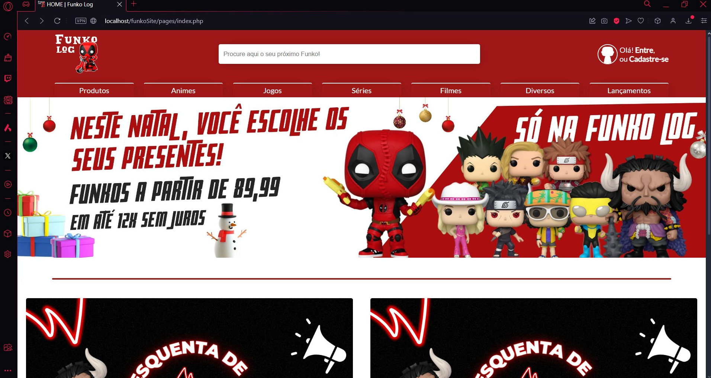
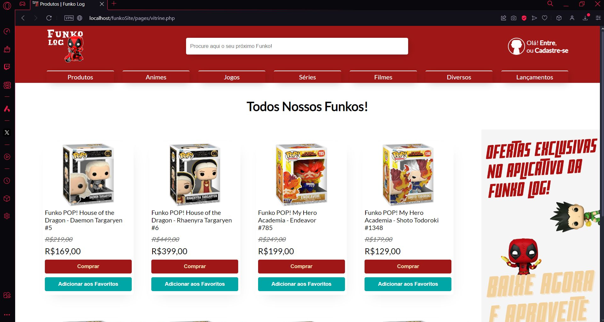
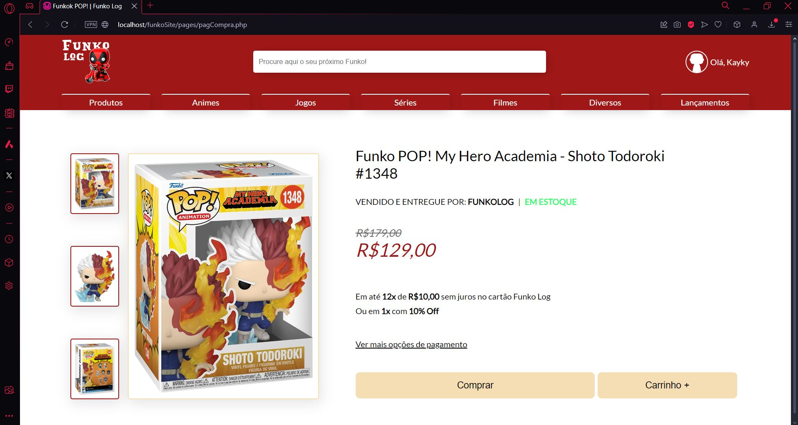
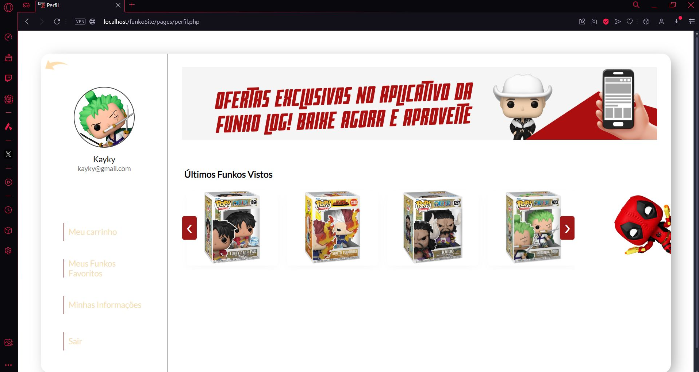

Galeria do Projeto





Sistema CRUD para gerenciamento de coleção Funko POP!
Funko Log é um sistema CRUD simples de gerenciamento e exibição de produtos Funko POP!, desenvolvido por diversão como prática de PHP e MySQL com phpMyAdmin. É uma solução leve e funcional para colecionadores organizarem suas coleções.
Criar uma aplicação web simples que permitisse o gerenciamento de uma coleção de Funko POPs, com operações básicas de CRUD (Create, Read, Update, Delete) em um banco de dados MySQL. O projeto foi desenvolvido como exercício prático de integração entre front-end e back-end.
O projeto foi desenvolvido para colecionadores de Funko POP! que desejam organizar e gerenciar suas coleções de forma digital. É ideal para pequenas coleções e uso pessoal ou em pequenos negócios de vendas de Funko POP!.
O projeto segue um padrão de três camadas: apresentação (HTML, CSS, JavaScript), lógica de negócio (PHP) e persistência de dados (MySQL). Utiliza phpMyAdmin para gerenciamento do banco de dados, facilitando o desenvolvimento e manutenção.